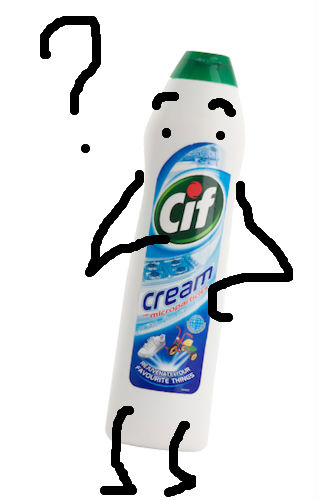

Le congé individuel de formation
(CIF)
Fabien Trébouvil
Claire Zuliani
Sommaire
- I. Le CIF, c'est quoi ?
- II. Demander un CIF
- III. Et une fois le CIF obtenu ?
I. Le CIF, c'est quoi ?

I. Le CIF, c'est quoi ?
- A. Le CIF en quelques mots
- B. Origine du CIF
- C. Pourquoi demander un CIF ?
A. En quelques mots
- Droit de s’absenter de son poste de travail pour suivre une formation
- Formation demandée à titre individuel
- Jusqu'à une durée d'un an
B. Origine du CIF
- Années 70 : les débuts de la formation professionnelle continue
- Des objectifs multiples
- Entre crise...
- ... et nouvelles aspirations
- 9 juillet 1970 : ANI
C. Pourquoi demander un CIF ?
- Se qualifier
- Préparer et passer un examen
- Se reconvertir
II. Demander un CIF
- A. Qui peut demander un CIF ?
- B. Comment demander un CIF ?
- C. Avec quel financement ?
- D. Quelle réponse possible de l'employeur ?
A. Qui peut demander un CIF ?
- Tout salarié
- Des conditions d'ancienneté à respecter
- CDI : 24 mois de travail, dont 12 dans l'entreprise
- CDD : 24 mois de travail, dont 4 dans les 12 derniers mois
- Un délai de franchise (de 6 mois à 6 ans)
B. Comment demander un CIF ?
- Une demande écrite à l'employeur, 60 ou 120 jours avant le début du stage
- Déposer un dossier auprès d'un organisme paritaire (FONGECIF ou OPCA)
C. Avec quel financement ?
- Une prise en charge de la rémunération
- Une prise en charge des frais
- Formation
- Transport
- Hébergement
D. Quelle réponse possible de l'employeur ?
- L'employeur ne peut pas refuser
- L'employeur peut repousser
- Pour motif de service (9 mois maximum)
- Pour effectifs simultanément absents (entreprises de plus de 200 salariés)
III. Et une fois le CIF obtenu ?
A. Un stagiaire CIF est un salarié...
B. ... toujours salarié au terme du CIF
A. Un stagiaire CIF est un salarié...
- Maintien des congés payés
- Maintien des droits d'ancienneté
- Maintien des droits syndicaux
B. ... qui est toujours salarié au terme du CIF
- Un maintien au poste obligatoire pour l'employeur
- Le salarié libre de partir
Conclusion et retour d'expérience
- Un droit décisif pour une formation déterminante
- Un droit qui n'est pas systématiquement accordé